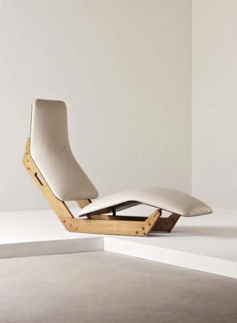
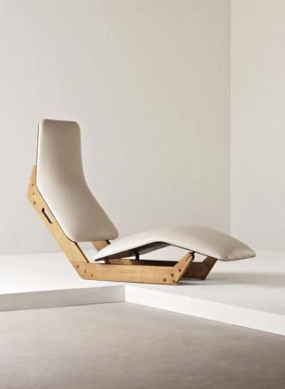

The home is surrounded by a landscaped garden and there are lots of different neighbours in the area. The average home is created for a single family.


If people hire an interior designer, they might not understand that they can actually hire from any place in the world. Deciding on the finest interior designer in Singapore If you would like to have the very best interior designer in Singapore then it’s very critical...

You should incorporate and place all things properly so the teen can relax, enjoy with family members and friends, and above all study comfortably. Though your teen may want the full room from floor to ceiling accomplished in a leopard…
 

"One of my strongest convictions, and one of the first canons of good taste, is that our houses, like the fish’s shell and the bird’s nest, ought to represent our individual taste and habits.
Color is a powerful design tool in decoration, as well as in interior design, which is the art of composing and coordinating colors together to create a stylish scheme on the interior architecture of the space
The geometric designs and heavy lines seem to be adapted from the area's textile and weaving patterns. “In contrast with the sobriety of architecture and decoration in the rest of Arabia, exuberant color and ornamentation characterize those of Asir. The painting extends into the house over the walls and doors, up the staircases, and onto the furniture itself. When a house is being painted, women from the community help each other finish the job. The building then displays their shared taste and knowledge.